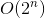

ECMAScript 6规范新增了一项内存管理优化机制，让JavaScript引擎在满足条件时可以重用栈帧。具体来说，这项优化非常适合“尾调用”，即外部函数的返回值是一个内部函数的返回值。比如：
function outerfunction() {
return innerfunction(); // 尾调用
}在ES6优化之前，执行这个例子会在内存中发生如下操作。
(1) 执行到outerFunction函数体，第一个栈帧被推到栈上。
(2) 执行outerFunction函数体，到return语句。计算返回值必须先计算innerFunction。
(3) 执行到innerFunction函数体，第二个栈帧被推到栈上。
(4) 执行innerFunction函数体，计算其返回值。
(5) 将返回值传回outerFunction，然后outerFunction再返回值。
(6) 将栈帧弹出栈外。
在ES6优化之后，执行这个例子会在内存中发生如下操作。
(1) 执行到outerFunction函数体，第一个栈帧被推到栈上。
(2) 执行outerFunction函数体，到达return语句。为求值返回语句，必须先求值innerFunction。
(3) 引擎发现把第一个栈帧弹出栈外也没问题，因为innerFunction的返回值也是outerFunction的返回值。
(4) 弹出outerFunction的栈帧。
(5) 执行到innerFunction函数体，栈帧被推到栈上。
(6) 执行innerFunction函数体，计算其返回值。
(7) 将innerFunction的栈帧弹出栈外。
很明显，第一种情况下每多调用一次嵌套函数，就会多增加一个栈帧。而第二种情况下无论调用多少次嵌套函数，都只有一个栈帧。这就是ES6尾调用优化的关键：如果函数的逻辑允许基于尾调用将其销毁，则引擎就会那么做。
注意 现在还没有办法测试尾调用优化是否起作用。不过，因为这是ES6规范所规定的，兼容的浏览器实现都能保证在代码满足条件的情况下应用这个优化。
尾调用优化的条件就是确定外部栈帧真的没有必要存在了。涉及的条件如下：
下面展示了几个违反上述条件的函数，因此都不符号尾调用优化的要求：
"use strict";
// 无优化：尾调用没有返回
function outerfunction() {
innerfunction();
}
// 无优化：尾调用没有直接返回
function outerfunction() {
let innerfunctionresult = innerfunction();
return innerfunctionresult;
}
// 无优化：尾调用返回后必须转型为字符串
function outerfunction() {
return innerfunction().tostring();
}
// 无优化：尾调用是一个闭包
function outerfunction() {
let foo = 'bar';
function innerfunction() { return foo; }
return innerfunction();
}下面是几个符合尾调用优化条件的例子：
"use strict";
// 有优化：栈帧销毁前执行参数计算
function outerfunction(a, b) {
return innerfunction(a + b);
}
// 有优化：初始返回值不涉及栈帧
function outerfunction(a, b) {
if (a < b) {
return a;
}
return innerfunction(a + b);
}
// 有优化：两个内部函数都在尾部
function outerfunction(condition) {
return condition ? innerfunctiona() : innerfunctionb();
}差异化尾调用和递归尾调用是容易让人混淆的地方。无论是递归尾调用还是非递归尾调用，都可以应用优化。引擎并不区分尾调用中调用的是函数自身还是其他函数。不过，这个优化在递归场景下的效果是最明显的，因为递归代码最容易在栈内存中迅速产生大量栈帧。
注意 之所以要求严格模式，主要因为在非严格模式下函数调用中允许使用
f.arguments和f.caller，而它们都会引用外部函数的栈帧。显然，这意味着不能应用优化了。因此尾调用优化要求必须在严格模式下有效，以防止引用这些属性。
可以通过把简单的递归函数转换为待优化的代码来加深对尾调用优化的理解。下面是一个通过递归计算斐波纳契数列的函数：
function fib(n) {
if (n < 2) {
return n;
}
return fib(n - 1) + fib(n - 2);
}
console.log(fib(0)); // 0
console.log(fib(1)); // 1
console.log(fib(2)); // 1
console.log(fib(3)); // 2
console.log(fib(4)); // 3
console.log(fib(5)); // 5
console.log(fib(6)); // 8显然这个函数不符合尾调用优化的条件，因为返回语句中有一个相加的操作。结果，fib(n)的栈帧数的内存复杂度是。因此，即使这么一个简单的调用也可以给浏览器带来麻烦：
fib(1000);当然，解决这个问题也有不同的策略，比如把递归改写成迭代循环形式。不过，也可以保持递归实现，但将其重构为满足优化条件的形式。为此可以使用两个嵌套的函数，外部函数作为基础框架，内部函数执行递归：
"use strict";
// 基础框架
function fib(n) {
return fibimpl(0, 1, n);
}
// 执行递归
function fibimpl(a, b, n) {
if (n === 0) {
return a;
}
return fibimpl(b, a + b, n - 1);
}这样重构之后，就可以满足尾调用优化的所有条件，再调用fib(1000)就不会对浏览器造成威胁了。